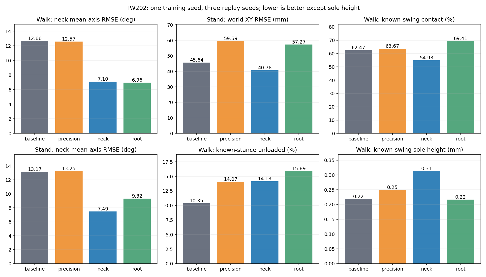
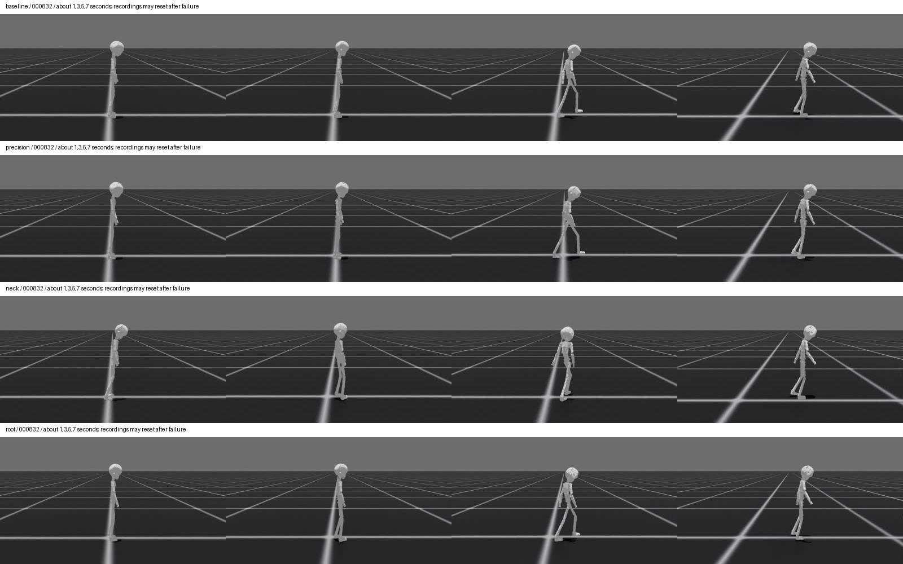
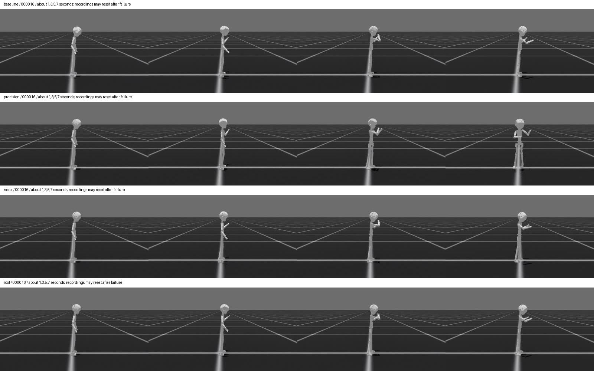
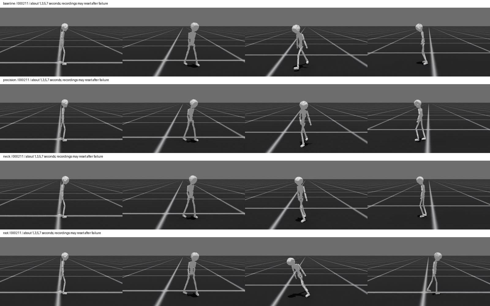

结论：不替换基线。头颈约束有局部收益，但新增组合没有同时解决接触、转向和静止鲁棒性。
四组全部使用同一套IK修正参考，独立从TW195 corrected的model_19999.pt续训2000轮。baseline表示奖励不变的续训对照，并非未做IK。precision增加站立精度；neck在此基础上增加头颈约束；root再增加骨盆yaw约束。
仅收紧站立位置尺度未达到目标：站立完成率6/6降至4/6，世界XY误差45.64升至59.59毫米。两次站立异常由手部跟踪条件触发，不应全部称作摔倒。
加入头颈约束相对precision，走路头颈平均误差12.57降至7.10度，站立13.25降至7.49度；相对baseline约降低44%和43%。完整站立6/6完成，XY误差40.78毫米。但转向0/3，合成静止4.08秒高度终止。走路2–8Hz头颈平均振幅只小幅变化，不能把角度跟踪改善说成所有抖动已消失。
再加入骨盆yaw后，平地走路骨盆误差7.68降至5.98度；站立则9.38升至13.32度，世界XY误差40.78升至57.27毫米。已知摆动期接触比例54.9%升至69.4%，转向仍0/3。朝向奖励有局部作用，但当前组合不具备整体优势。
四组平地走路都24/24完成，但已知摆动期足底高度平均仅0.22–0.31毫米，接触比例54.9%–69.4%。完成周期不能视为成功学会正常抬脚。接触指标只统计有可信标签的片段，不能外推到未知时段；角点速度是几何代理，不是接触点滑移实测。
合成静止中，baseline从上一轮87.09毫米改善到12.60毫米，说明单纯继续训练已有收益，不能归功于新增奖励。root为17.36毫米；precision和neck提前终止。仅上肢表达合成测试中，precision保持20秒但净漂移131.57毫米，其余提前终止。合成目标是分布外测试，不替代完整动作验证。
下一步优先测试baseline直接加头颈约束，去掉已显示退化的站立尺度修改，以分离头颈收益与交互影响。骨盆方向约束暂保留为实验项。四个最终模型全部归档；本次不自动启动新训练，也不宣布TW202质量验收通过。
局限：一个训练种子，三个验证种子不是三个独立训练重复；只有8条平地、2条合格站立和1条转向样本。早停组误差存在截断偏差，应同时查看完成率、首次终止时刻和5秒窗口。视频只做关键时刻抽帧审阅，高频结论依靠遥测。000832/000016/000211帧图保留，转向片段可见显著前倾及重置，不能将重置后的站姿当作恢复成功。

完成参考周期不等于无滑移。站立限位诊断000346、跑步机和非平地样本单独列出。
| 组 | 平地走路 | 站立上肢 | 转向 | 站立限位诊断 | 跑步机 | 非平地 |
|---|---|---|---|---|---|---|
| baseline | 24/24 | 6/6 | 2/3 | 3/3 | 0/3 | 0/3 |
| precision | 24/24 | 4/6 | 2/3 | 1/3 | 0/3 | 0/3 |
| neck | 24/24 | 6/6 | 0/3 | 3/3 | 0/3 | 0/3 |
| root | 24/24 | 6/6 | 0/3 | 3/3 | 0/3 | 0/3 |
| 组 | 类别 | 世界XY RMSE mm | 头颈三轴平均RMSE ° | 骨盆yaw RMSE ° | 手腕误差 mm |
|---|---|---|---|---|---|
| baseline | flat_forward | 41.40 | 12.66 | 6.57 | 7.08 |
| baseline | standing_upper | 45.64 | 13.17 | 13.71 | 7.02 |
| precision | flat_forward | 41.78 | 12.57 | 9.27 | 7.09 |
| precision | standing_upper | 59.59 | 13.25 | 26.76 | 8.23 |
| neck | flat_forward | 39.16 | 7.10 | 7.68 | 6.13 |
| neck | standing_upper | 40.78 | 7.49 | 9.38 | 6.49 |
| root | flat_forward | 38.43 | 6.96 | 5.98 | 5.77 |
| root | standing_upper | 57.27 | 9.32 | 13.32 | 7.45 |
排除首秒；不同终止时间不可直接用净位移排名。此项是分布外压力测试，不是完整人体动作。
| 组 | 目标 | 时长s | 净位移mm | 最大偏移mm | 终止 |
|---|---|---|---|---|---|
| baseline | corrected_static | 20.00 | 12.60 | 12.89 | {} |
| baseline | corrected_upper | 7.34 | 134.61 | 134.61 | {'anchor_pos': 1} |
| precision | corrected_static | 2.04 | 291.34 | 291.34 | {'anchor_pos': 1} |
| precision | corrected_upper | 20.00 | 131.57 | 197.88 | {} |
| neck | corrected_static | 4.08 | 416.20 | 416.20 | {'anchor_pos': 1} |
| neck | corrected_upper | 10.30 | 186.05 | 186.05 | {'anchor_pos': 1} |
| root | corrected_static | 20.00 | 17.36 | 29.09 | {} |
| root | corrected_upper | 11.12 | 259.76 | 259.76 | {'anchor_pos': 1} |
原始NPY为20fps；机器人为50fps参考时间。两者不按播放时间同步。机器人视频失败后可能重置，不能把后续片段视为连续成功。
原始NPY视频
原始NPY为20fps；机器人为50fps参考时间。两者不按播放时间同步。机器人视频失败后可能重置，不能把后续片段视为连续成功。
原始NPY视频
原始NPY为20fps；机器人为50fps参考时间。两者不按播放时间同步。机器人视频失败后可能重置，不能把后续片段视为连续成功。
原始NPY视频
baseline 完整报告、最终权重目录、所有动作与NPY视频